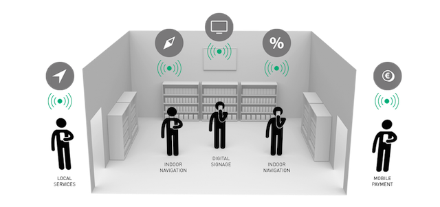
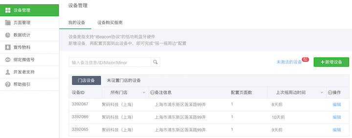
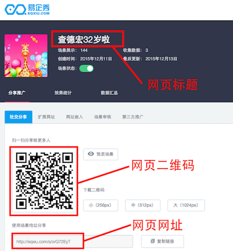
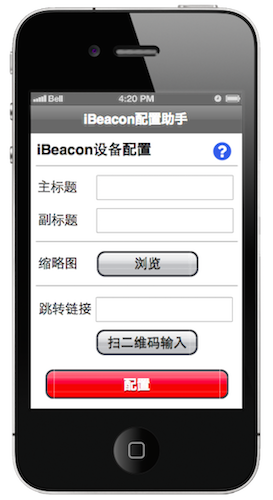

让iBeacon设备轻松支持"微信摇一摇·周边"
导读
iBeacon基于最新的蓝牙低功耗4.0技术，可以用来打造一个信号基站，当用户持有移动设备（智能手机、平板电脑等）进入该区域时（一般10~20米以内），就会得到获得该iBeacon的推送信息：
举个例子，某品牌时装专卖店里面部署着iBeacon设备，用户带着智能手机进入店铺时，智能手机就可以检测到来自iBeacon的推送消息。这些消息可以是一件衣服的设计说明、或是衣物的搭配指南、或是优惠折扣等信息，这给用户购物增加了一种全新的体验。
把iBeacon用起来有两个前提条件：一是部署iBeacon设备，二是用户安装了支持这个iBeacon的APP。然而大家知道，现在让用户装一个新的APP是多么困难的一件事，要是有一个巨无霸APP支持iBeacon就好了。好在，微信就已经干了这件事。
微信从6.1版本推出"摇一摇·周边"功能，支持iBeacon设备。用户在开启手机蓝牙的状态下，进入微信摇一摇菜单，摇一摇手机，如果此时附近有iBeacon设备，就会自动出现周边入口，用户点击后，微信就会打开商家预定义的网页：
基于以上介绍，相信大家对iBeacon和"微信摇一摇·周边"有了一定了解。具体操作起来，有以下一番步骤：
- 1. 制作摇一摇网页，如商品展示、折扣优惠、投票签到等；
- 2. 登录"微信摇一摇·周边"后台，申请iBeacon的ID；
- 3. 购买iBeacon设备，将ID烧入到iBeacon设备
- 4. 登录"微信摇一摇·周边"后台，配置iBeacon设备和网页的关联关系；
- 5. 部署iBeacon设备，如放置在店铺或者贴附在商品上；
- 6. 完工，可以开始微信摇一摇了
上述步骤具有需要一定知识储备，特别是涉及"微信摇一摇·周边"的操作，这里让我们瞻仰一下它的后台管理界面：
很多用户使用下来表示波费周折，煞费脑细胞。为此，我们推出一种使用APP配置iBeacon的简易方案，让您无需操作微信后台，就可以轻松方便地配置好iBeacon设备。
方案概述
本方案使用的iBeacon设备由JUMA提供，已经为用户烧录好了ID，这个ID由微信分配，用户不需要关心其数值。
默认情况下，和iBeacon设备ID关联的网页是JUMA微信公众号。
接着，用户可以制作自己的展示网页。在这里以"易企秀"为例为大家介绍，它是一个手机网页DIY制作工具，像电子贺卡、活动报名、商品介绍等都很容易制作，做好之后得到一个网页的网址或者二维码，如下所示：
用户从AppStore或者应用宝下载并安装JUMA的"iBeacon配置助手"。
将手机靠近iBeacon设备，APP便会扫描到设备，并进入设备的配置界面：
此时，将网页的标题、网址等输入APP，APP会和微信后台服务器交互信息，这样就把iBeacon设备的ID和网页关联起来了。
方案特点
- 用户无需创建"微信摇一摇·周边"账户，或者登录其后台管理界面
- 用户无需了解iBeacon UUID、Major、Minor、"微信摇一摇·周边"等相关概念
- 用户借助"易企秀"等工具制作一个网页
- 用户通过"iBeacon配置助手"APP配置iBeacon及其网页的关联关系
技术指标
- iBeacon信号范围：10~20米以内；
- iBeacon设备尺寸：32mm*32mm*6mm；
- iBeacon硬件规格：iBeacon.pdf；
- 支持Android和iOS等移动设备；
- 支持"微信摇一摇·周边"；
服务内容
- 提供iBeacon成品；
- 提供iBeacon配置助手APP；
- 提供"易企秀"网页制作服务(可选)；
方案咨询
请发邮件至hello@jumacc.com，客服人员会和您联系。